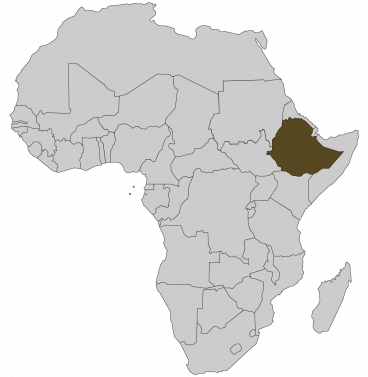
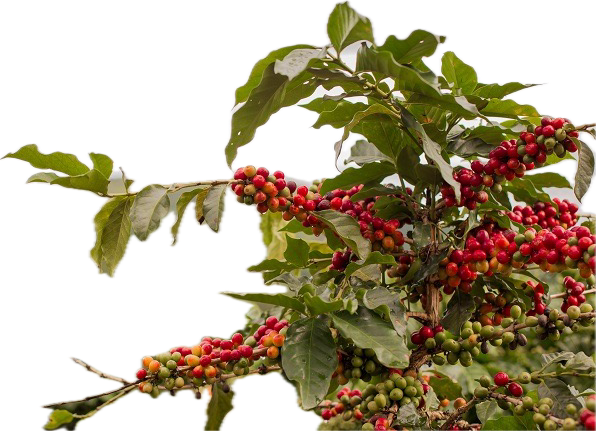

☕ For the Love of Coffee ☕
A dedicated place for coffee appreciation and its cultural significance.
What is coffee?
Ahhhh, coffee. Coffee is an unofficial sponsor of weekdays. It can turn the groggiest person into an alert and one! In all seriousness, coffee in the everyday sense is a beverage brewed from roasted coffee beans, and is prepared in several different ways all across the world. Some people prefer it plain, while others prefer to add milk, cream, sugar, spices, and several other additions. However, the National Coffee Association defines coffee as the berries harvested from a tropical plant.
Origins
The when and how coffee was discovered is largely unknown. Several stories and legends exist to explain its origins. One thing that is for certain, is all coffee grown around the globe can be traced back to modern-day Ethiopia. There is a legend that around the third century AD, a goat shepherd noticed the change in behavior of his goats after the goats consumed coffee berries. During the 15th century, knowledge of the energizing "berries" spread from Ethiopia to the Arabian peninsula, where coffee cultivation, the coffee trade and human caffeination grew immensely. Speaking of caffeination, the energizing properties of coffee are due to a special organic molecule named caffeine. As a stimulant, caffeine acts on the Central Nervous System which affects a person's cognitive function.
The Caffea plant
Most of us may recognize a roasted coffee bean, but we may be unfamiliar with the actual plant itself! Coffee comes from the berries of Caffea plants, an evergreen shrub with green leaves, white flowers, and fleshy red fruit where the seeds (coffee beans) are located.
